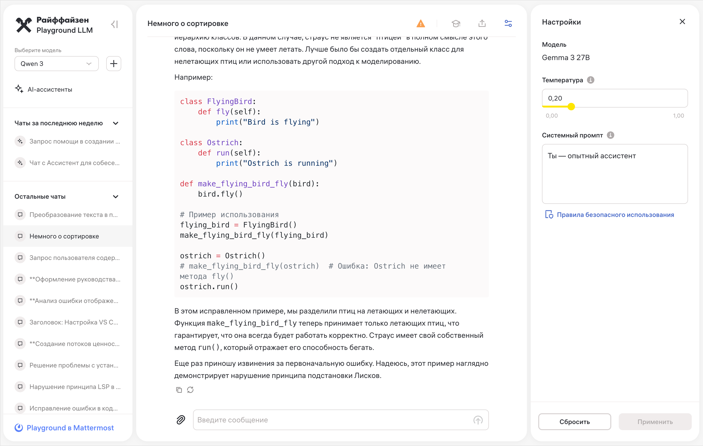
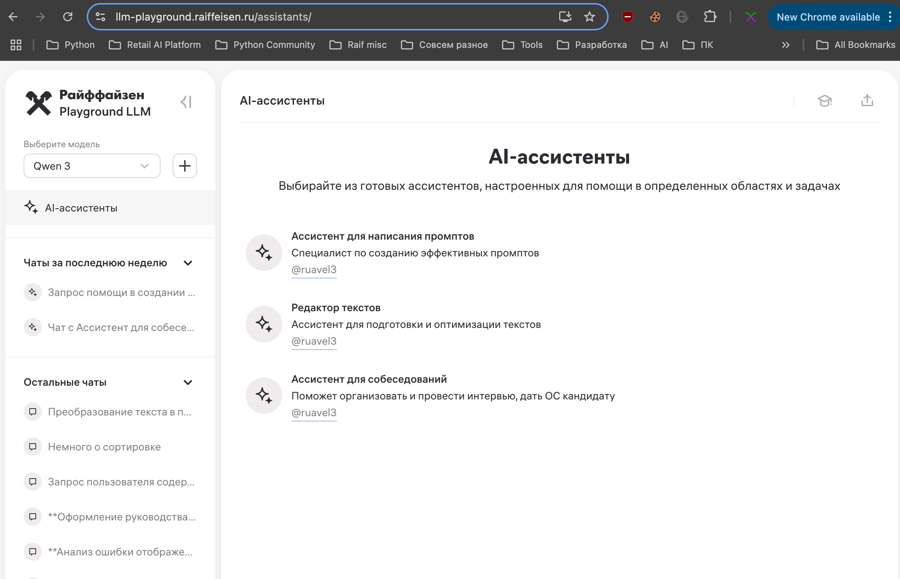
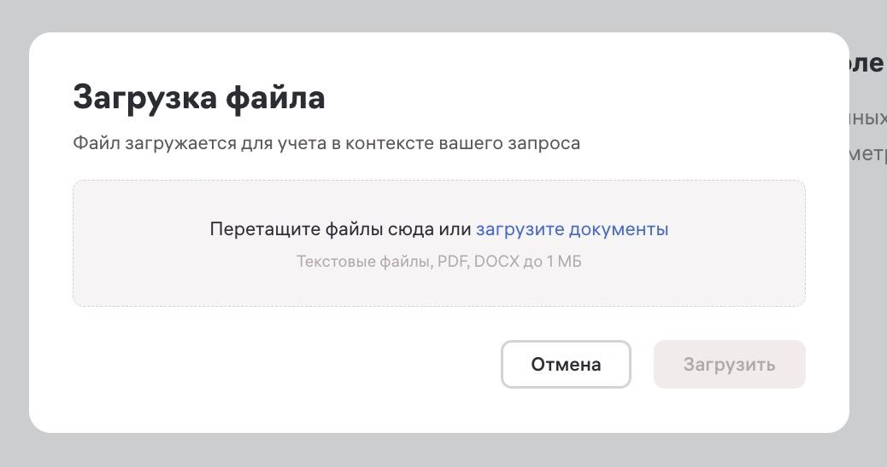
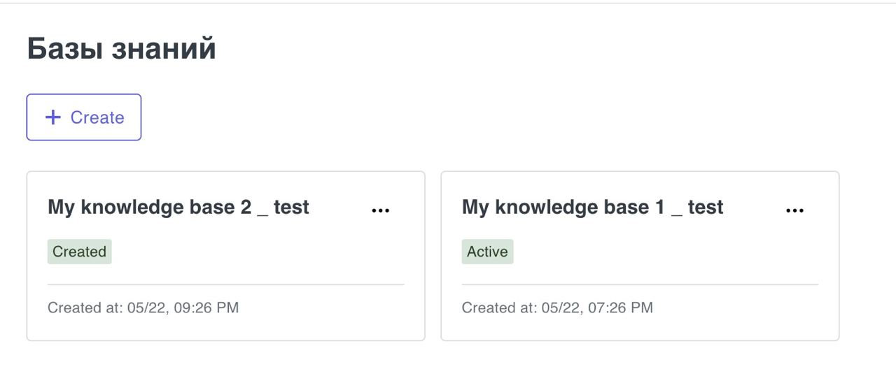

Retail AI Platform планы, стратегия
9 июля 2025Представлюсь

- Техлид в Retail AI Platform
- Ранее лидил разработку Chat, AI Assistants, RCRM, Knowledge Base
- SCL Python Community
- Python, typescript, kubernetes, фронтенд, ахитектура
- Выступаю, вхожу в ПК кучи Python конференций
Текущее состояние
Что делаем
- Скоро (~неделя) начнём давать LLM gateway, прошедшим опрос
- Модели — внутренние (сейчас)
- Проводим пилот copilot IDE
- Проводим пилот n8n (пока доступ не даём)
Пилот Copilot
- Раздали ключи в Retail
- 200 участников
- Java, Kotlin, Javascript, Android, Python, DS
LLM gateway
Архитектура

Наш выбор gateway
- 🚅 LiteLLM
- Написан на python
- Мультимодален — для внешних и внутренних
- Много интеграций, openai api, anthropic api
- Много фич — fallback, retry, лимиты, биллинг
Модельная политика
- Large
- Base
- Base coding
Планы
Внешние модели
Как?
- Just.ai
- Топ 5 банков, компания на рынке 14 лет
- Был пилот https://air.fail/
- Позднее планируется тендер
- Вена против договора США (openai)
Векторные базы
Зачем?
- Поиск по семантике (смыслу)
- Для RAG (retrieval augmented generation)
- Кластеризация, рекомендации
Одно из сравнений
| Звезд | Гибрид | Индексы | gRPC | Язык | ||
| Meilisearch | 41к | ✅ | FLAT | Rust | Векторный поиск является experimental Примитивный гибридный поиск |
|
| Milvus | 25к | FLAT IVF_FLAT IVF_PQ IVF_SQ8 HNSW SCANN (beta) BIN_FLAT BIN_IVF_FLAT |
✅ | Go | Необходимо указывать максимальную длину для текстового payload Используют в ВШЕ для поиска по миллионам научных текстов |
|
| Qdrant | 16к | HNSW | ✅ | Rust | Есть только один тип индекса —
приближенный (остальные тестировались с brute-force индексом FLAT) Есть асинхронный клиент |
|
| Weaviate | 8к | ✅ | FLAT (+ BQ) HNSW (+ PQ) |
✅ | Go | Строит полнотекстовый индекс с BM25, можно использовать как классический поисковый движок Есть продвинутый гибридный поиск с несколькими вариантами алгоритмов Субъективно лучшее качество поисковой выдачи на коротких «keyword»-like запросах |
Подитоги
- Скорость — milvus, qdrant
- Есть опыт с meilisearch, weaviate
- Для ограниченного количества векторов — pgvector
LLM playground
Как сейчас — обычный чат

Как сейчас — ассисенты

RAG 1

RAG 2

Что ещё?
- RAG в llm playground (возможно, с mivlus)
- Ключи через llm playground
- pgvector для тех, кто хочет отдельную векторную базу
Tools в playground

Как работают tools?
graph TD
User[Пользователь] -->|Промпт| LLM
LLM -->|Нужен tool, вызови его| Tool[Внешний API/Функция]
Tool -->|Результат| LLM
LLM -->|Финальный ответ| User
А как же MCP?
graph TD
User[Пользователь] -->|Промпт| LLM
LLM -->|Нужен MCP, вызови его| MCP
MCP -->|Результат| LLM
LLM -->|Финальный ответ| User